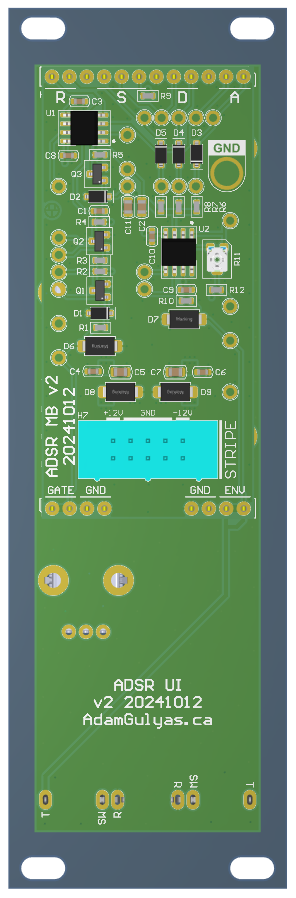

Light Array 9
This page is under construction.
.png)
Brief description of project, what it is.
Motivation
Why did I build this?
Learn programming, first uC project I've made entirely by myself. Christmas gifts.
Schematic
schematic snippet here (can probably fit whole thing), followed by PDF download link)
Explain schematic
PCB
The main challenge for the PCB design was - keeping it to 2 layers
Enclosure
Assembly
Exploded view. Label parts and use those names throughout this journal.
Getting USB jack to line up with cover, some knobs pinched
Seam isn't tight, screw placement
Part printing orientation, don't want supports (mention first version that had support over the entire front
Light Diffuser
Sanded Acrylic, translucent filament, different thicknesses. Picture of different things I printed. Thin white filament, seems strong enough. Brighter is sides of cell lined with aluminum tape, but time consuming.
Button
rubbing with enclosure due to seam in filament
Front Cover
Heatset Inserts
Part number, dimensions of hole
Variable Height Cover
Knob pin clearance
Back Cover (Name?)
Programming Header clearance
Firmware
.ioc Configuration
Perph 1
Perph 2
main.c
See if there's a good way to include the non-auto-generated code
lib_WS2812C.c
Debugging
Talk about using logic probe, all issues. Show Logic screenshot of it working.
Cost Analysis
The signal headers that go between the motherboard and UI board had to have the signals in the same order, which I solved by labeling every signal on both boards, then visually checking that they were the same in the multiboard assembly.
Motherboard
I was anticipating having to debug so I added testpoints to every node, ones big enough to rest the tip of an oscilloscope probe in. I also added a hole I could clip the ground probe to.
I chose to use 4 layers:
| Components, Signal |
| Ground |
| Power, short Signal traces |
| Ground |
This put a ground reference plane next to every signal trace. I thought about using just two layers, but there would have been too many power traces crossing under signal traces.
UI Board
There's not much to say about this one other than I had to get the UI components in the right position. I did add a graphic of a cat:

Faceplate
Since the PCBs were being sponsored by PCBWay, I wanted to do something that showed off thier manufacturing abilities that would be visable to the end user. I chose a pattern in the silkscreen that exposes the golden ENIG finish of the copper layer beneith it.
I ended up drawing the pattern in QCAD, then importing it as a DXF into Altium. See below for pictures.
Multiboard
Altium lets you import multiple PCBs into a Multiboard assembly in order to check that they align mechanically:



Mechanical
This module follows the eurorack standard, which mainly defines the size of the faceplate and what voltage rails are available. I had already researched this for previous modules and made a faceplate template that I used here to make sure it was the right size.
Asssembly
Assembly went without issue. The footprints I made were easy to solder to and there weren't any clearance issues.


Testing
I was fortunate in that the first module I assembled worked right away. There were no mistakes in my schematic or BOM, and my solder joints were all good. Below are some screen captures from my oscilloscope. The yellow trace is the clock signal I fed into the Gate input. The blue trace is the envelope from the ENV output.

A standard output.
A standard output, but with a sharper attack, higher sustain, and slower release.
The sharpest attack and release with the highest sustain produce a square wave.

A slow attack and no sustain produce a triangle/ramp wave.

A sharp attack and release with no sustain produce an impulse.
Conclusion
I think this project turned out pretty well. It will wait in my synth case until the other modules are ready.
PCBWay
This project was sponsored by PCBWay, who provided for free the bare PCBs. The only thing they asked me to do was talk about my impressions of the PCBs I recieved, so here's some pictures I captured from my microscope:

A SOT23 footprint. You can see the indents on the pads where they used
a flying probe to test for any unwanted continuity between all the seperate copper areas.
Flying probe machines are pretty cool. Here's a video showing one in action.
Arbitrary soldermask shapes show good definition. Points aren't rounded off.
I also included a font test on the UI board. Only the smallest text was starting to blur.


Text: height = 0.6mm, stroke width = 0.12mm. Sufficiently legible.
Seperation between characters and strokes is clear.

Text: height = 0.5mm, stroke width = 0.1mm.
Letters and strokes start to bleed into each other.
One other detail that I appreciated was that the edge routing was smooth with no chatter or splinters, unlike some other boards I've received in the past.
Overall it was very easy to work with PCBWay and I'm happy with the quality of the boards they provided. I'd recommend them to anyone looking to have their own PCB designs manufactured.
Back to Projects